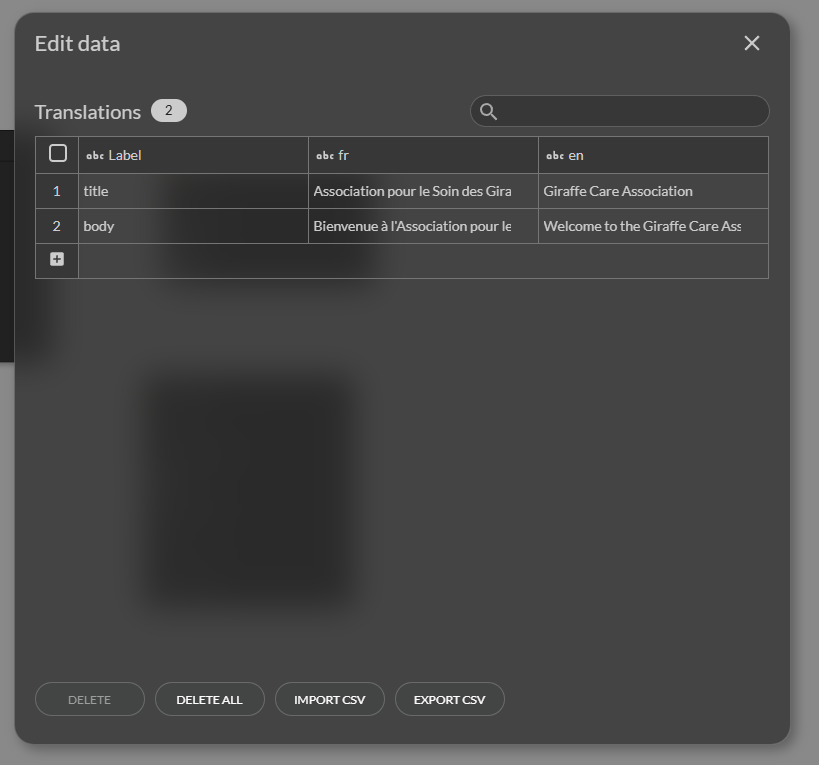

Translations
The translation of a mobile application is a key element to reach an international audience and provide a personalized user experience.
This documentation guides you step by step to implement a multilingual translation system in your application.
Use the "Translations" table for labels
To manage translations, Zyllio offers a predefined table named Translations. This table is located in the Database tab and already contains examples of translated labels to help you get started.
Structure of the "Translations" table
The Translations table is organized as follows:
- First column: The name of the label. Each label must be unique and represents the text you want to display in your application.
- Following columns: Each column represents a language, according to the ISO standard (for example:
frfor French,enfor English,esfor Spanish, etc.). These columns contain the translations of the corresponding label.
Example of Translations table
| Label name | fr | en | es |
|---|---|---|---|
| welcome_message | Bienvenue | Welcome | Bienvenido |
| button_submit | Soumettre | Submit | Enviar |
| error_not_found | Not found | Not found | No encontrado |
Fill this table with the labels and their translations for all the languages supported by your application.

Example of Translations table
Use the "Translate" formula in components
Once the Translations table is completed, you can integrate the translations into your application using the Translate formula. This formula is used in display components (such as texts, buttons, etc.) present on your screens.
Properties of the "Translate" formula
- Translations table: Reference the Translations table.
- Label name: Specify the label name as defined in the first column of the table.

Translate Formula usage
When the application is launched, the user's language is automatically detected. This means that if the user has set their device to French, the labels in French will be displayed by default. If the user's language is not supported, the first language defined in the Translations table will be used.